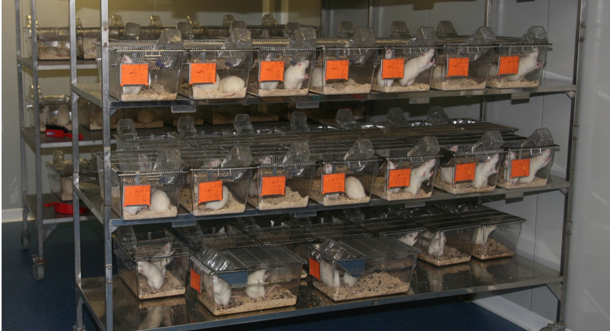

When I started my PhD in 2010, the controversy on GM crops was raging. I participated to the analysis and publication of the results of the first long-term toxicity study of a Roundup herbicide and a Roundup-tolerant GM maize.
Long-term toxicity of a Roundup herbicide and a Roundup-tolerant GM maize
The contamination of foodstuffs by glyphosate residues has been linked to its use on crops which have been made tolerant to agricultural applications of Roundup herbicides. When I started my PhD in 2010, the controversy on GM crops was raging. No long-term studies were available to understand if the residues from glyphosate spray on GM plants could be a source of health risk. Repeated-dose 90-day toxicity studies on GM crops fed to rats often produced statistically significant differences in liver and kidney biochemical parameters, but it was not clear whether these differences were due to chance or to early signs of the development of chronic disease. The research group initiated the first study of the long-term toxicity of Roundup in Roundup-tolerant GM maize, that is, sprayed or not sprayed with Roundup.
The first manuscript describing the main findings was published in September 2012 in the journal Food and Chemical Toxicology (Séralini et al, 2012). The study was exploratory and not conceived to conclude with certainty on long-term effects because the pathologies of normal aging introduce background noise that impairs statistical power with 10 animals per group. The strain of rat used, Sprague-Dawley, is particularly prone to tumors. The paper caused an explosion of media coverage because it contained graphic images of rats with large tumors. The media coverage strategy used by Pr. Séralini was heavily criticised and condemned by the scientific community and journalists. This had a strong influence on public opinion about GM foods. The debate unfortunately even led to serious political consequences, with countries such as Kenya and Peru placing a moratorium on GM crops.
One year after publication, the editor-in-chief of the journal requested the raw data. This was examined by a panel of experts, who together with the editor-in-chief decided that the paper should be retracted because “the results presented (while not incorrect) are inconclusive”. Conflicts of interests, confidentiality and censorship in health risk assessment of these products were then discussed (Séralini et al., 2014). The debate continues, as lawsuits have uncovered evidence that Monsanto, the maker of Roundup, engaged with a network of scientists to discredit the study and obtain retraction of the paper. One should bear in mind that the influence of advocate groups is not unilateral. While companies develop strategies to preserve the commercialisation of their pesticides, other advocate groups deploy strategies to ban pesticides. This was the case in the Séralini affair. While Monsanto deployed a strategy to undermine the publication, the network of activists involved in the publication of this study orchestrated a communication operation causing an explosion of media coverage by spreading graphic images of rats with large tumors. Although the Séralini publication didn't provide insights on the toxicity of GM crops because of its inconclusiveness, the series of controversies which became the Séralini affair is a well-documented case of fundamental challenges faced by science in a world increasingly dominated by corporate influence.

Integrating multiple ‘omics’ analysis to study the effects of herbicide-tolerant crops
I was hired by the group of Dr. Michael Antoniou at King’s College London to evaluate if the molecular profiles (proteomics, transcriptomics, and metabolomics) of liver and kidneys from animals of the Séralini study could reveal more insights into the toxicity of Roundup and the Roundup-tolerant GM crop”.
Molecular profiles from liver and kidneys of animals fed GM crops (sprayed or not with Roundup) indicated that these products did not alter organ function. This clearly indicated that no adverse effects related to the feeding of the NK603 maize cultivated with or without Roundup were observed (Mesnage et al., 2017c). The absence of pathological effects from the consumption of glyphosate-tolerant crops was further confirmed by other projects. I participated to some of these projects more recently by analysing the gut microbiome composition in Wistar rats fed NK603 and MON 810 GM maize for 6 months (Mesnage et al., 2019), at two concentrations (11 and 33%). Our analysis showed that the different maize diets have not caused changes in microbiome composition.
Although there was no effects when animals were fed NK603 GM corn, liver molecular profiles suggested the development of non-alcoholic fatty liver disease for animals exposed to the Roundup herbicide in their drinking water. Overall, transcriptome, metabolome and proteome disturbances showed a substantial overlap with biomarkers of non-alcoholic fatty liver disease and its progression to steatohepatosis (Mesnage et al., 2015)(Mesnage et al., 2017d)
We evaluated compositional differences between the NK603 GM corn and its isogenic counterpart using metabolomics and proteomics (Mesnage et al., 2016). This revealed energy metabolism changes which can be linked to the insertion of the transgene. The maize kernels analysed were previously used in a chronic study investigating the potential toxic effects arising from the consumption of the NK603 Roundup-tolerant GM maize in rats. I analysed the transcriptome and metabolome of liver and kidneys from this study (Mesnage et al., 2017c) . There were no statistically significant differences that we could attribute to the consumption of the NK603 Roundup-tolerant GM crop (with our without Roundup application during cultivation). This suggested that the metabolic changes caused by the transgene insertion are not toxicologically relevant.
A large number of animal toxicity tests have been performed with herbicide-tolerant crops. The available scientific evidence indicates that the potential adverse health effects arising from GM crops are not different from those created by conventional breeding practices. The main lesson learned from 20 years of animal feeding trials with GM crops is that animal feeding trials with whole food/feed are largely irreproducible because they have a low power to detect adverse effects. The use of ‘omics’ approaches can improve the predictive ability of these tests, as well as the accuracy of the comparative analysis of chemical composition. Future health risk evaluations would benefit from the use of high-throughput ‘omics’ technologies.